A seamless winter holiday across France, Switzerland, the Netherlands, and Germany (15 Dec 2026 – 04 Jan 2027), based from the UK.
Click any place in the itinerary bar, city dot, or sight star to explore! (Click any pin, or double-click / double-tap anywhere on the map to inspect live Google Reviews & nearby places)
Complete chronological day-by-day itinerary in a clean table format, with activities, accommodation, and interactive map links.
| Day | Location (Exact Place / Store / Landmark) | Action / Activity | Cost |
|---|---|---|---|
|
Day 1
15 Dec 2026 (Tue)
Transit
|
📍 London ➔ Amsterdam
|
Departure Across English Channel · FlixBus Route N824 (Confirmed)
• London Victoria Coach Station by 20:30 PM (60–90 min before departure).
• FlixBus Route N824 departing at 22:00 (10:00 PM; Seats 11C & 11D · Booking Ref: 338 890 0447).
• Overnight sleeper coach transit via Dover Port and Eurotunnel into the Netherlands.
💡 Day Tip: Arrive by 21:00 (1h before departure). Keep passports in daypack ready for French border police (PAF) entry stamps at Dover/Eurotunnel.
|
🎟️ Sightseeing: Free ($0 AUD)
🚆 Transit: AUD $135.96 (Prepaid)
🏨 Lodging: Included on Sleeper Coach
Free Sightseeing ($0 AUD)
|
|
Day 2
16 Dec 2026 (Wed)
Netherlands
|
📍 Amsterdam
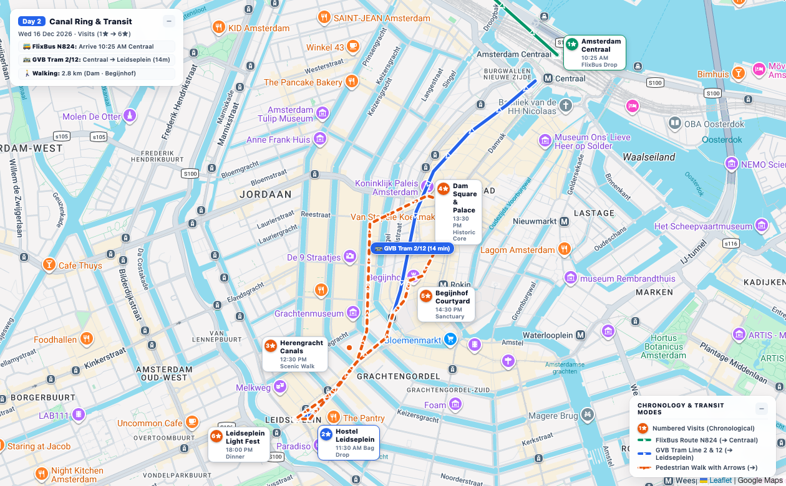
🗺️ Route Map (1★ ➔ 6★)
Tap to explore ➔
|
Canal Ring & Amsterdam Light Festival
• Amsterdam Centraal (waterfront drop-off De Ruijterkade 153) at 10:25 AM.
• Amsterdam Hostel Leidseplein via GVB Tram Line 2/12 at 11:30 AM (official room check-in opens 14:00).
• Leidsestraat & UNESCO Herengracht 'Gentlemen's Canal'.
• Dam Square, Royal Palace (Koninklijk Paleis) exterior and Nieuwe Kerk.
• Kalverstraat; arched wooden gateway at Spui, Begijnhof courtyard, English Reformed Church.
• Amsterdam Light Festival at Leidseplein.
💡 Day Tip: Pay tourist taxes at front desk (€137.69 total for 3 nights for 2). Keep valuables in hostel lockers.
|
🎟️ Sightseeing: Free ($0 AUD)
🚆 Transit: €3.40 (GVB Tram)
🏨 Lodging: €45.90 / night (€137.69 total 3N)
Free Sightseeing ($0 AUD)
|
|
Day 3
17 Dec 2026 (Thu)
Netherlands
|
📍 Amsterdam & Zaandam
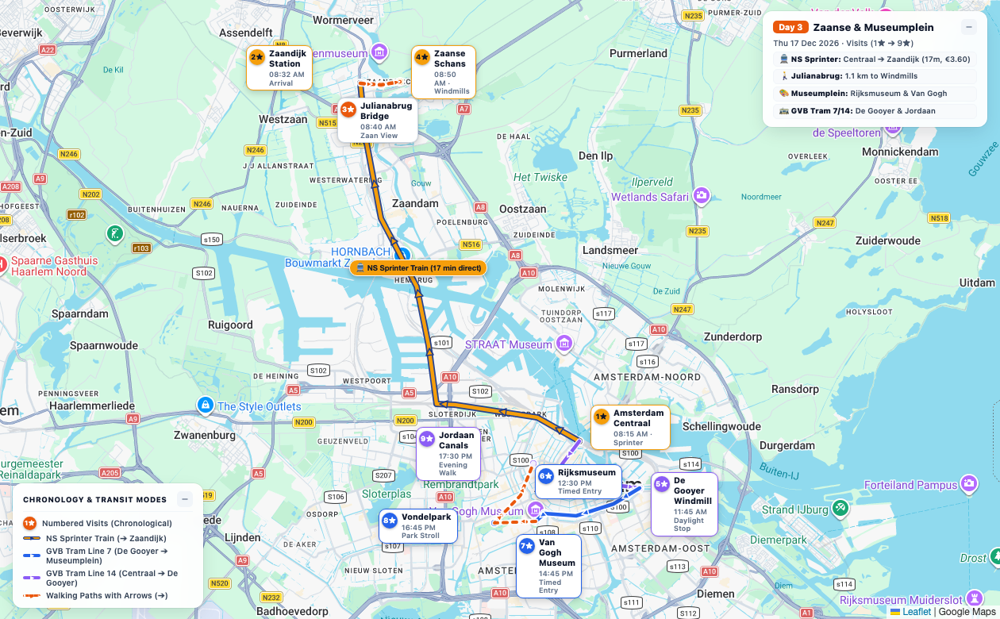
🗺️ Route Map (1★ ➔ 9★)
Tap to explore ➔
|
Zaanse Schans Windmills, De Gooyer, Museumplein Grounds & Vondelpark
• NS Sprinter Train from Amsterdam Centraal (08:15 AM) to Zaandijk Zaanse Schans (17 min, €3.60).
• Zaanse Schans historic windmills, clog workshop & Catharina Hoeve cheese farm (08:50 AM – 11:00 AM).
• Return Sprinter to Amsterdam Centraal + GVB Bus 22 to De Gooyer Windmill & Brouwerij 't IJ (11:45 AM daylight stop).
• Rijksmuseum via Tram 7/19 (12:30 PM); monumental neo-Renaissance facade, Cuypers passage & garden grounds stroll.
• Museumplein green lawns, iconic photo stops & Van Gogh Museum exterior pavilion (14:00 PM).
• Adjacent Vondelpark paths & Rosarium pavilion (16:45 PM), then evening canal walk through Jordaan.
💡 Day Tip: Visiting De Gooyer Windmill on the way down from Centraal keeps the loop clockwise in daylight, allowing a relaxed afternoon exploring the Museumplein grounds, Vondelpark, and Jordaan with zero museum queue stress.
|
🎟️ Sightseeing: Free ($0 AUD · Exterior walks & park grounds)
🚆 Transit: €7.20 (NS Return) + €9.00 (GVB 24h Pass)
🏨 Lodging: €45.90 / night (Night 2 of 3)
Free Sightseeing ($0 AUD)
|
|
Day 4
18 Dec 2026 (Fri)
Netherlands
|
📍 The Hague & Amsterdam
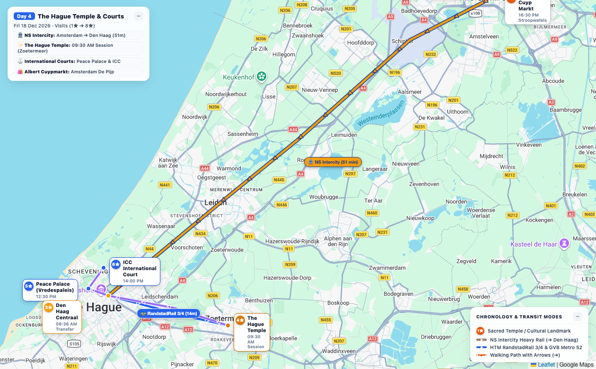
🗺️ Route Map (1★ ➔ 8★)
Tap to explore ➔
|
Sacred Temple Worship, Peace Palace & Street Markets
• NS Intercity Train to Den Haag Centraal + RandstadRail Tram 3/4 to Zoetermeer, Dorp.
• The Hague Netherlands Temple arrival by 09:10 AM; Sacred Endowment Session (09:30 AM – 11:30 AM).
• Binnenhof, Mauritshuis, and Peace Palace (Vredespaleis) exterior via Tram Line 1.
• International Criminal Court (ICC) judicial campus.
• Albert Cuyp Markt via NS Intercity to Amsterdam Zuid & Metro 52 to De Pijp.
• Anne Frank House exterior along Prinsengracht & Westerkerk docks.
💡 Day Tip: Arrive at temple entrance 20 minutes prior to session. Pack Temple recommend & white attire in daypack.
|
🎟️ Sightseeing: Temple, Peace Palace, ICC: Free ($0 AUD)
🚆 Transit: €13.20 (NS Train OVpay)
🏨 Lodging: €45.90 / night (Night 3 of 3)
Free Sightseeing ($0 AUD)
|
|
Day 5
19 Dec 2026 (Sat)
Germany
|
📍 Amsterdam ➔ Cologne
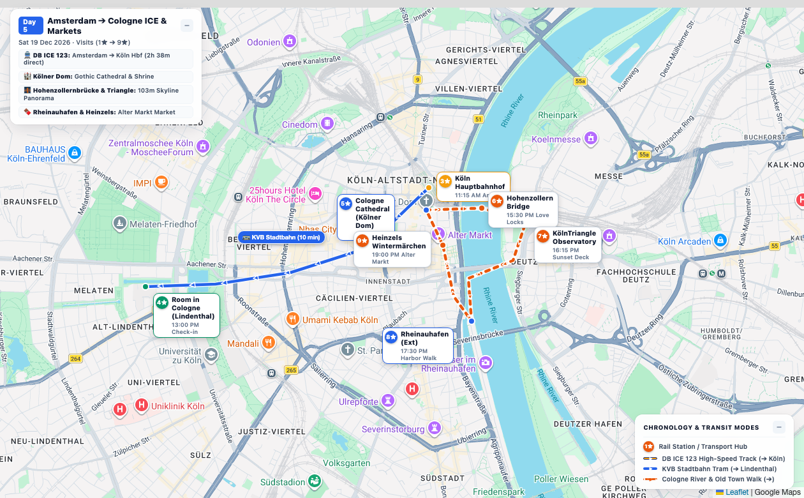
🗺️ Route Map (1★ ➔ 9★)
Tap to explore ➔
|
High-Speed Rail to Cologne & Rhine River Christmas Markets
• DB ICE 123 from Amsterdam Centraal (08:38 AM) direct to Köln Hbf (11:15 AM).
• Room in Cologne (Brucknerstraße 3, Lindenthal) check-in at 13:00 via KVB Stadtbahn 1/7.
• Cologne Cathedral (Kölner Dom) Gothic vaults & Shrine of the Three Kings.
• Hohenzollern Bridge love locks & Museum Ludwig modern art.
• Cologne Triangle (KölnTriangle) 103m observation deck for skyline views.
• Rheinauhafen Waterfront Promenade, historic harbor cranes & Chocolate Museum peninsula exterior.
• Old Town Cologne (Altstadt) & Heinzels Wintermärchen Christmas Market at Alter Markt.
💡 Day Tip: Quiet residential location in Lindenthal near Hiroshima-Nagasaki-Park and Aachener Straße, with convenient KVB Stadtbahn connections to central Cologne.
|
🎟️ Sightseeing: Cologne Triangle: €5.00 · Cathedral & Rheinauhafen: Free
🚆 Transit: Booked · DB ICE 123 High-Speed Train
🏨 Lodging: €85.00 / night (€170.00 total 2N)
Paid Sightseeing: ~A$8 AUD (€5)
|
|
Day 6
20 Dec 2026 (Sun)
Germany
|
📍 Cologne & Düsseldorf
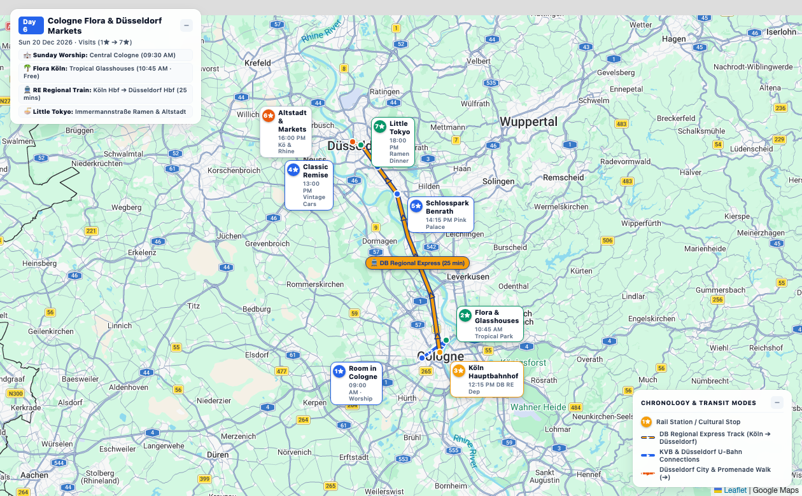
🗺️ Route Map (1★ ➔ 7★)
Tap to explore ➔
|
Sunday Worship, Flora Tropical Glasshouses & Düsseldorf Little Tokyo
• Morning church worship services in central Cologne (09:30 AM).
• Flora und Botanischer Garten Köln year-round tropical glasshouses & camellia house (10:45 AM; free).
• DB Regional Express from Köln Hbf (12:15 PM) direct to Düsseldorf Hbf (20 min).
• Classic Remise Düsseldorf historic locomotive roundhouse & vintage cars (13:00 PM).
• Schlosspark Benrath pink baroque palace & mirror pond in afternoon daylight (14:15 PM).
• Königsallee canal & Rheinuferpromenade / Altstadt Christmas Markets at twilight (16:00 PM).
• Little Tokyo Düsseldorf along Immermannstraße for authentic ramen & Japanese bakeries (18:00 PM).
💡 Day Tip: Note: Cologne's Rhein-Seilbahn cable car is closed Nov–Mar for annual winter maintenance; Flora's heated glasshouses next door are open daily and free. Düsseldorf's 7 themed Christmas Markets sit right beside Little Tokyo.
|
🎟️ Sightseeing: Flora Glasshouses, Classic Remise, Benrath, Markets: Free ($0 AUD)
🚆 Transit: €15.00 (Regional Return / VRS-VRR Ticket)
🏨 Lodging: €85.00 / night (Night 2 of 2)
Free Sightseeing ($0 AUD)
|
|
Day 7
21 Dec 2026 (Mon)
Germany
|
📍 Cologne ➔ Frankfurt
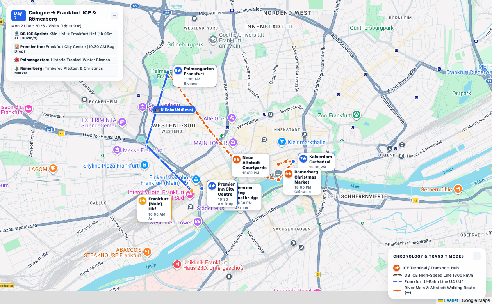
🗺️ Route Map (1★ ➔ 9★)
Tap to explore ➔
|
High-Speed Rail to Frankfurt & Historic Römerberg Markets
• DB ICE Train from Köln Hbf (09:00 AM) direct to Frankfurt (Main) Hbf (10:05 AM).
• Premier Inn Frankfurt City Centre luggage drop at 10:30 AM (Conf: 6320.027.566).
• Palmengarten Frankfurt tropical palm house and winter botanical glasshouses.
• Eiserner Steg iron footbridge overlooking River Main financial skyline.
• Frankfurt Cathedral (Kaiserdom) & New Old Town (Neue Altstadt) coronation route.
• Römerberg & Frankfurt Christmas Market across Paulsplatz.
💡 Day Tip: Frankfurt Hbf is easily walkable to the hotel. The Christmas market extends from Hauptwache down to Römerberg.
|
🎟️ Sightseeing: Palmengarten: €7.00 · Altstadt, Cathedral, Römerberg: Free
🚆 Transit: Booked · DB ICE High-Speed Train
🏨 Lodging: €78.00 / night (€156.00 total 2N)
Paid Sightseeing: ~A$12 AUD (€7)
|
|
Day 8
22 Dec 2026 (Tue)
Germany
|
📍 Frankfurt & Friedrichsdorf
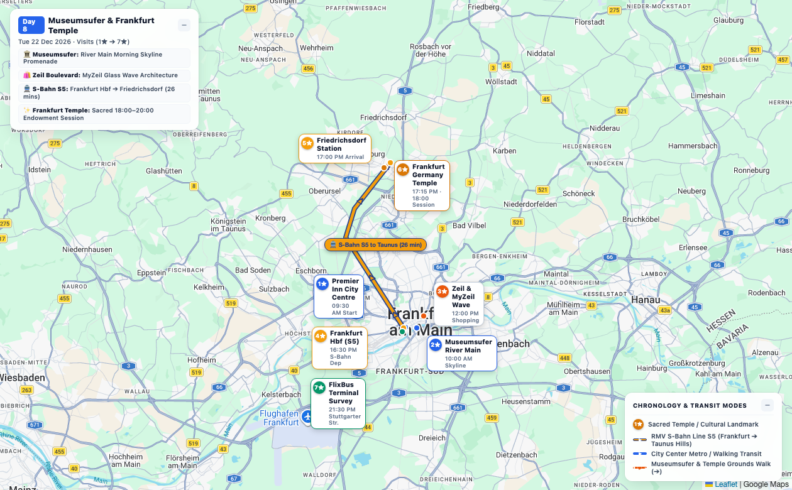
🗺️ Route Map (1★ ➔ 7★)
Tap to explore ➔
|
Museumsufer, Zeil & Sacred Frankfurt Temple Session
• Museumsufer River Main promenade & banking skyline reflections.
• Zeil pedestrian shopping boulevard & MyZeil glass wave facade.
• S-Bahn Line S5 from Frankfurt Hbf to Friedrichsdorf in the Taunus hills (26 min).
• Frankfurt Germany Temple arrival by 05:15 PM; Sacred Endowment Session (06:00 PM – 08:00 PM).
• Return to Premier Inn Frankfurt via S-Bahn S5; rest for 03:30 AM early morning departure.
💡 Day Tip: Pack temple attire in daypack. Frankfurt Central Station FlixBus stop (Stuttgarter Str. 26) is a 7 min walk from hotel.
|
🎟️ Sightseeing: Temple, Main River, Zeil: Free ($0 AUD)
🚆 Transit: €5.80 (S-Bahn) or €12.50 (RMV Day Pass)
🏨 Lodging: €78.00 / night (Night 2 of 2)
Free Sightseeing ($0 AUD)
|
|
Day 9
23 Dec 2026 (Wed)
France
|
📍 Frankfurt ➔ Strasbourg & Kehl
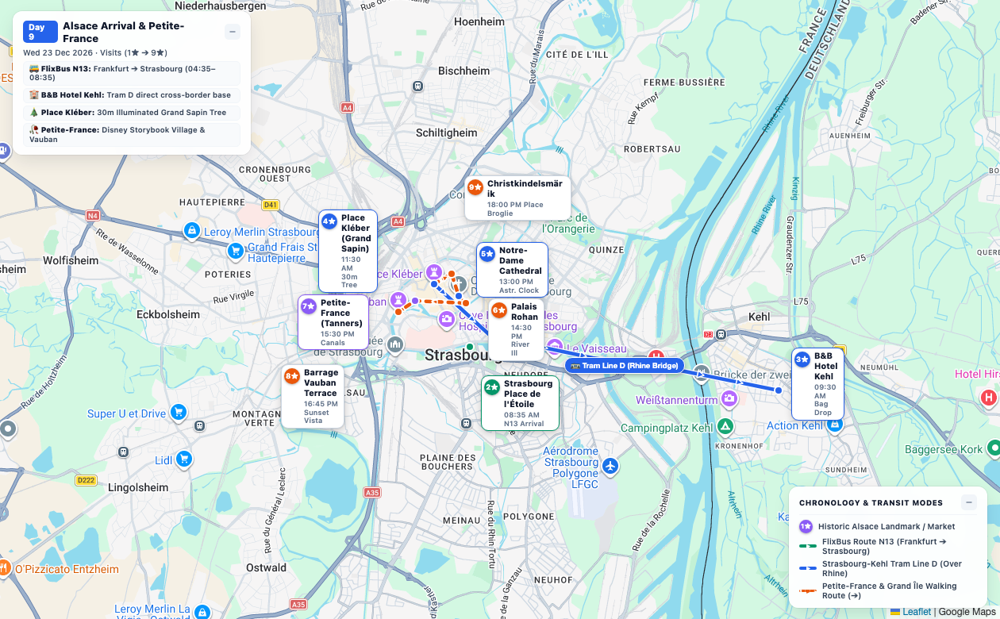
🗺️ Route Map (1★ ➔ 9★)
Tap to explore ➔
|
Cross-Border Coach to Alsace, Petite-France & Strasbourg Great Tree
• FlixBus Route N13 from Frankfurt Hbf (04:35 AM) to Strasbourg (08:35 AM; Booking Ref: 339 153 0857).
• B&B Hotel Kehl luggage drop at 09:30 AM via cross-border Tram Line D (Conf: 5159.618.641).
• Place Kléber 30-meter Great Christmas Tree (Grand Sapin).
• Cathédrale Notre-Dame-de-Strasbourg pink sandstone spire & Astronomical Clock.
• Petite-France half-timbered canals (Disney Beauty and the Beast inspiration).
• Barrage Vauban rooftop terrace & Ponts Couverts panoramic lock views.
• Christkindelsmärik at Place Broglie (France's oldest Christmas market, est. 1570).
💡 Day Tip: Tram Line D runs frequently between Kehl station and central Strasbourg (Place Kléber). Buy 24h Tram card (€4.60).
|
🎟️ Sightseeing: Cathedral, Petite-France, Place Kléber: Free ($0 AUD)
🚆 Transit: AUD $79.96 (FlixBus Paid) + €1.90 (Tram D)
🏨 Lodging: €75.00 / night (€226.90 total 2N for 2)
Free Sightseeing ($0 AUD)
|
|
Day 10
24 Dec 2026 (Thu)
France
|
📍 Colmar (Alsace)
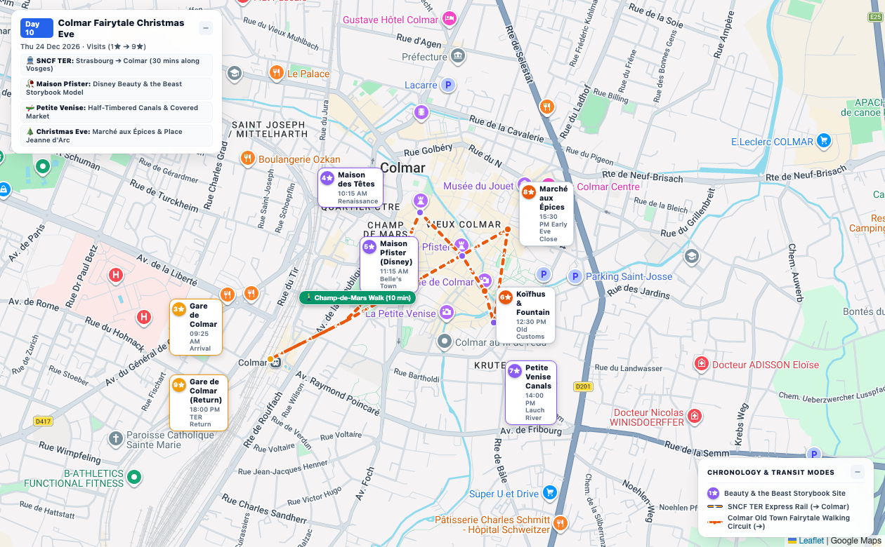
🗺️ Route Map (1★ ➔ 9★)
Tap to explore ➔
|
Colmar Fairytale Day: Real-Life Beauty and the Beast Village
• SNCF TER Train from Strasbourg to Colmar (30 min, 08:45 AM – 09:25 AM).
• Old Town Colmar (Vieille Ville): Belle's 'Poor Provincial Town' in Disney's Beauty and the Beast.
• Maison Pfister 1537 wooden corner turret & La Maison des Têtes Renaissance facade.
• Rue des Marchands cobblestones & Collégiale Saint-Martin tiled roof.
• Fontaine Schwendi at Place de l'Ancienne Douane (exact fountain Belle sits on with her book).
• Marché Couvert 1865 covered food market for fresh kougelhopf & Munster cheese.
• Quai de la Poissonnerie & La Petite Venise pastel half-timbered canal bridges.
• Afternoon return via TER train (before 16:30 PM early Christmas Eve market closing) to Strasbourg & B&B Hotel Kehl.
💡 Day Tip: Alsace Christmas markets close early (~16:00–17:00 PM) on 24 Dec. Pre-book a 03:15 AM taxi/Uber from B&B Hotel Kehl to Strasbourg Place de l'Étoile for tomorrow's 04:05 AM FlixBus N846 (Tram D pauses ~00:30–04:30 AM).
|
🎟️ Sightseeing: All Beauty & the Beast sites, markets & old town: Free ($0 AUD)
🚆 Transit: €16.00 (SNCF TER Return)
🏨 Lodging: €75.00 / night (Night 2 of 2)
Free Sightseeing ($0 AUD)
|
|
Day 11
25 Dec 2026 (Fri)
Switzerland
|
📍 Zurich & Lucerne ➔ Lauterbrunnen
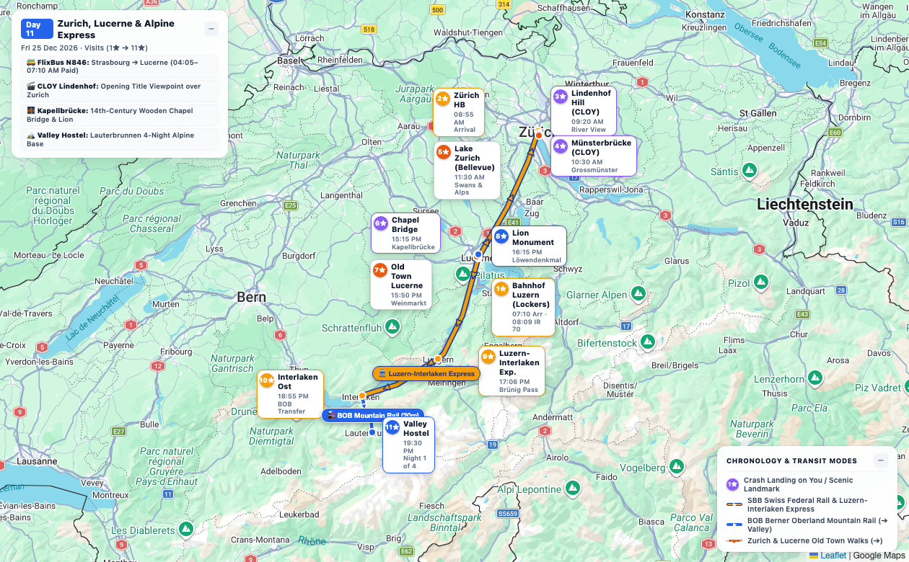
🗺️ Route Map (1★ ➔ 11★)
Tap to explore ➔
|
Zurich Morning & Lucerne Afternoon (Christmas Day) ➔ Lauterbrunnen
• FlixBus Route N846 arrives at Luzern Landenberg (07:10 AM); walk/bus 10 min to Bahnhof Luzern to lock bags in SBB lockers.
• Direct SBB IR 70 Train to Zürich HB (08:09 AM – 08:55 AM) right at winter sunrise.
• Lindenhof Hill (Crash Landing on You opening title viewpoint) & Münsterbrücke.
• Lake Zurich (Zürichsee) promenade at Bürkliplatz & Bellevue.
• Return train to Lucerne (arr 13:25); tour Chapel Bridge (Kapellbrücke) & Water Tower.
• Old Town Lucerne (Altstadt) painted guild squares & Lion Monument (Löwendenkmal).
• Luzern-Interlaken Express (18:06 PM) over Brünig Pass along Lake Lungern (CLOY finale).
• BOB Mountain Train to Lauterbrunnen; check in at Valley Hostel (20:30 PM; Conf: 5275.904.352).
💡 Day Tip: SBB lockers accept cards/coins (CHF 7–9). Spending the pre-dawn dark hour on the warm Zurich train ensures both Zurich and Lucerne are explored in peak daylight!
|
🎟️ Sightseeing: Lindenhof, Chapel Bridge, Lion Monument: Free ($0 AUD)
🚆 Transit: AUD $76.96 (FlixBus Paid) + SBB Pass / Half Fare Rail
🏨 Lodging: CHF 48.00 – CHF 55.00 / night (Night 1 of 4)
Free Sightseeing ($0 AUD)
|
|
Day 12
26 Dec 2026 (Sat)
Switzerland
|
📍 Lauterbrunnen, Mürren & Schilthorn
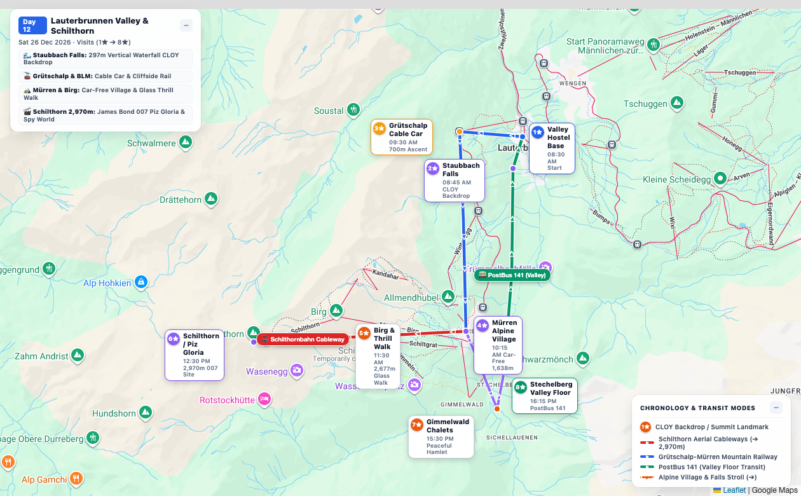
🗺️ Route Map (1★ ➔ 8★)
Tap to explore ➔
|
Lauterbrunnen Valley & The Schilthorn / Mürren Ridge
• Staubbach Falls 297m vertical cliff waterfall cascades (CLOY Swiss scenery).
• Grütschalp Cable Car + cliffside rail to car-free Mürren (1,638m).
• Birg (2,677m) suspended glass-floor Thrill Walk over vertical cliffs.
• Schilthorn / Piz Gloria (2,970m) 360° summit terrace & James Bond 007 Spy World.
• Cable car descent via Gimmelwald to Stechelberg.
• PostBus 141 along canyon floor back to Valley Hostel for Swiss cheese fondue.
💡 Day Tip: Check live webcams at schilthorn.ch before ascending. Schilthorn cableway is 50% off with Swiss Half Fare Card or Swiss Travel Pass.
|
🎟️ Sightseeing: Mürren & Gimmelwald: Free · Schilthorn Cableway: CHF 42.80 (with Half Fare)
🚆 Transit: CHF 8.40 (Local cable car) + PostBus 141
🏨 Lodging: CHF 48.00 – CHF 55.00 / night (Night 2 of 4)
Alpine Summit Day
|
|
Day 13
27 Dec 2026 (Sun)
Switzerland
|
📍 Wengen, Jungfraujoch & Grindelwald
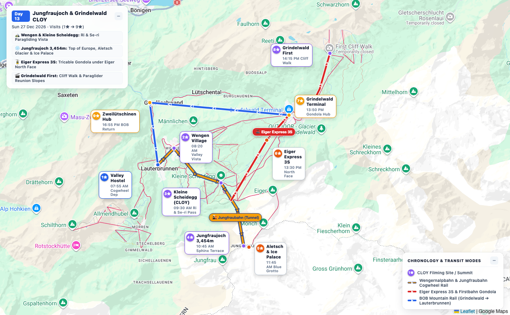
🗺️ Route Map (1★ ➔ 9★)
Tap to explore ➔
|
Jungfraujoch 'Top of Europe' & Grindelwald CLOY Reunion Sites
• Wengernalpbahn cogwheel train (07:55 AM) to Wengen & Wengen Reformed Church canyon overlook.
• Kleine Scheidegg (2,061m) beneath Eiger North Face (09:30 AM; CLOY paraglider watching spot).
• Jungfraujoch ('Top of Europe', 3,454m) (10:45 AM – 13:15 PM): Sphinx Observatory, Aletsch Glacier & Ice Palace.
• Eiger Express 3S Cable Car (13:30 PM) gliding past Eiger rock face to Grindelwald Terminal (15 min).
• Grindelwald First (2,168m) & First Cliff Walk by Tissot (14:15 PM, well before 16:00 last winter ascent).
• Bort alpine slopes where Yoon Se-ri lands paraglider and reunites with Captain Ri.
• BOB Mountain Train back to Lauterbrunnen and Valley Hostel (17:14 PM).
💡 Day Tip: Depart by 07:55 AM so you board Firstbahn gondola before 14:15 PM (winter last ascent ~16:00, sunset 16:38). First Cliff Walk is free with gondola ticket.
|
🎟️ Sightseeing: Kleine Scheidegg & First Cliff Walk: Free with transit pass
🚆 Transit: Jungfraujoch Round-Trip: CHF 95.00 – CHF 190.00 (Pass dependent)
🏨 Lodging: CHF 48.00 – CHF 55.00 / night (Night 3 of 4)
High Alpine Summit Day
|
|
Day 14
28 Dec 2026 (Mon)
Switzerland
|
📍 Lake Brienz, Iseltwald, Sigriswil & Thun
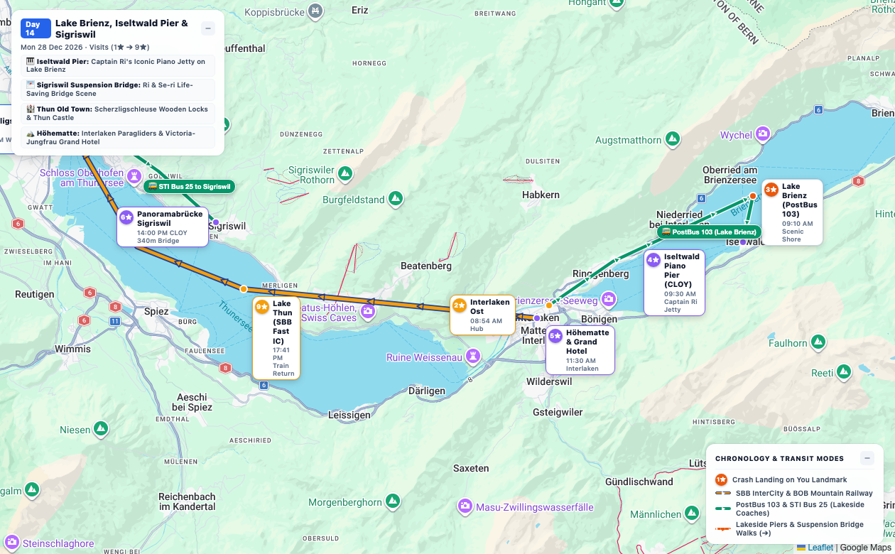
🗺️ Route Map (1★ ➔ 9★)
Tap to explore ➔
|
The Ultimate CLOY & Lakes Day: Iseltwald Pier, Sigriswil Bridge & Lake Thun
• Train to Interlaken Ost + PostBus 103 along turquoise shores of Lake Brienz.
• Iseltwald Pier (Landing Stage): Captain Ri's iconic piano jetty on Lake Brienz (CLOY).
• Höhematte Park paraglider views & Victoria-Jungfrau Grand Hotel facade.
• Panoramabrücke Sigriswil 340m suspension bridge over Gummischlucht gorge (where Ri saves Se-ri).
• Lake Thun (Thunersee), Scherzligschleuse wooden lock bridges & Thun Castle (Schloss Thun).
• Fast train to Interlaken Ost + BOB Mountain Train (front carriage) back to Lauterbrunnen (19:00 PM).
💡 Day Tip: Carry CHF 5 coin or contactless card for Iseltwald pier and CHF 8 for Sigriswil bridge. Always verify you board the front carriage marked Lauterbrunnen at Interlaken Ost Platform 2!
|
🎟️ Sightseeing: Iseltwald Pier: CHF 5.00 · Sigriswil Bridge: CHF 8.00
🚆 Transit: CHF 11.80 (Local trains & PostBus)
🏨 Lodging: CHF 48.00 – CHF 55.00 / night (Night 4 of 4)
Paid Sightseeing: ~A$23 AUD (13 CHF)
|
|
Day 15
29 Dec 2026 (Tue)
France
|
📍 Lauterbrunnen ➔ Bern ➔ Paris
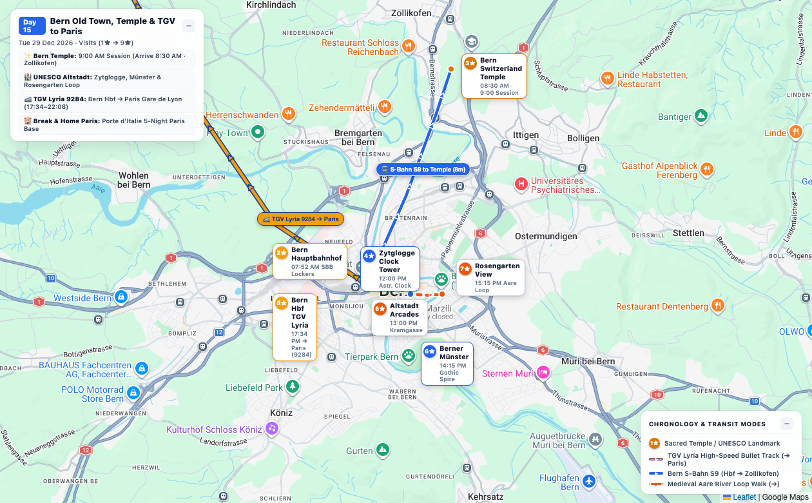
🗺️ Route Map (1★ ➔ 9★)
Tap to explore ➔
|
Bern UNESCO Old Town, Zytglogge, Rosengarten & Journey to Paris
• BOB Train + SBB Train from Lauterbrunnen (06:33 AM) to Bern Hbf (07:52 AM); store bags in lockers.
• Bern Switzerland Temple (Zollikofen) via S-Bahn; arrival by 08:30 AM for confirmed Sacred Proxy Endowment Session (09:00 AM – 11:00 AM).
• Altstadt Bern (UNESCO Old Town) medieval sandstone arcades (Lauben) & Berner Münster cathedral.
• Zytglogge astronomical clock tower & Bear Park (Bärengraben) on the Aare River.
• Rosengarten (Rose Garden Viewpoint) panoramic vista overlooking the emerald Aare loop.
• TGV Lyria 9284 from Bern Hbf (17:34) direct to Paris Gare de Lyon (22:08).
• Paris Metro Line 14 direct to Break & Home Paris Italie check-in (Conf: 5135.300.413).
💡 Day Tip: Early departure from Lauterbrunnen ensures arriving at Bern Temple by 08:30 AM for the confirmed 09:00 AM session. Bern station lockers take contactless cards (CHF 7–9). Spend the unhurried afternoon in the medieval arcades and Rosengarten before boarding your 17:34 TGV to Paris.
|
🎟️ Sightseeing: Temple, Bern Old Town, Rosengarten: Free ($0 AUD)
🚆 Transit: TGV Lyria: Booked · SBB: CHF 19.80 · Locker: CHF 8.00
🏨 Lodging: €83.06 / night (€415.30 total 5N)
Free Sightseeing ($0 AUD)
|
|
Day 16
30 Dec 2026 (Wed)
France
|
📍 Le Chesnay & Versailles
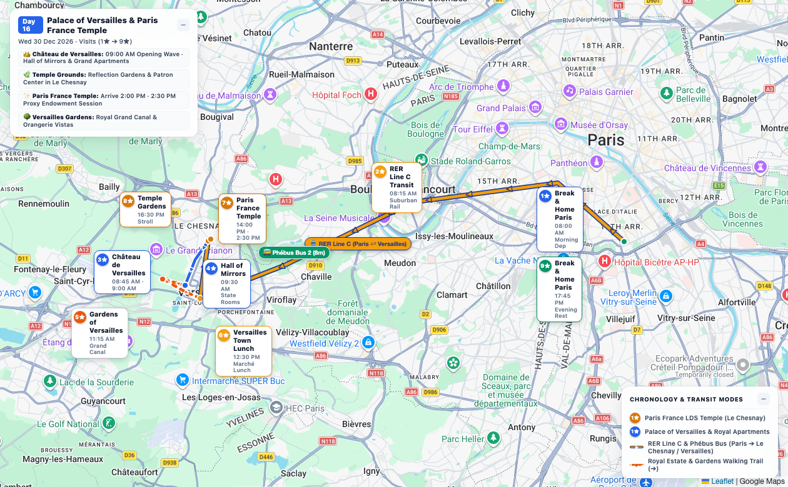
🗺️ Route Map (1★ ➔ 9★)
Tap to explore ➔
|
Palace of Versailles Opening Wave & Paris France Temple Sacred Session
• Paris Metro Line 14 + RER Line C to Versailles Château Rive Gauche (depart 08:00 AM).
• Palace of Versailles (Château de Versailles) 09:00 AM opening wave timed entry (near-empty Hall of Mirrors & King's Grand Apartments).
• Gardens of Versailles, Orangerie parterre & Grand Canal royal vistas (100% free winter access).
• Relaxed lunch in historic Versailles town, followed by Phébus Bus 2 to Le Chesnay (8 mins).
• Paris France Temple arrival by 14:00 PM; Sacred Proxy Endowment Session (2:30 PM – 4:30 PM).
• Temple Reflection Gardens & courtyard stroll, then return to Paris via RER Line C & Break & Home Paris Italie.
💡 Day Tip: Visiting Versailles at 09:00 AM opening wave lets you walk an uncrowded Hall of Mirrors before tour buses arrive. After lunch, a quick 8-min Phébus Bus 2 ride takes you straight to the Paris France Temple for your peaceful 2:30 PM session.
|
🎟️ Sightseeing: Paris France Temple: Free ($0 AUD) · Palace of Versailles: €25.00
🚆 Transit: €8.30 (RER C Return) + €2.00 (Phébus Bus 2)
🏨 Lodging: €83.06 / night (Night 2 of 5)
Paid Sightseeing: ~A$42 AUD (€25)
|
|
Day 17
31 Dec 2026 (Thu)
France
|
📍 Paris (New Year's Eve)
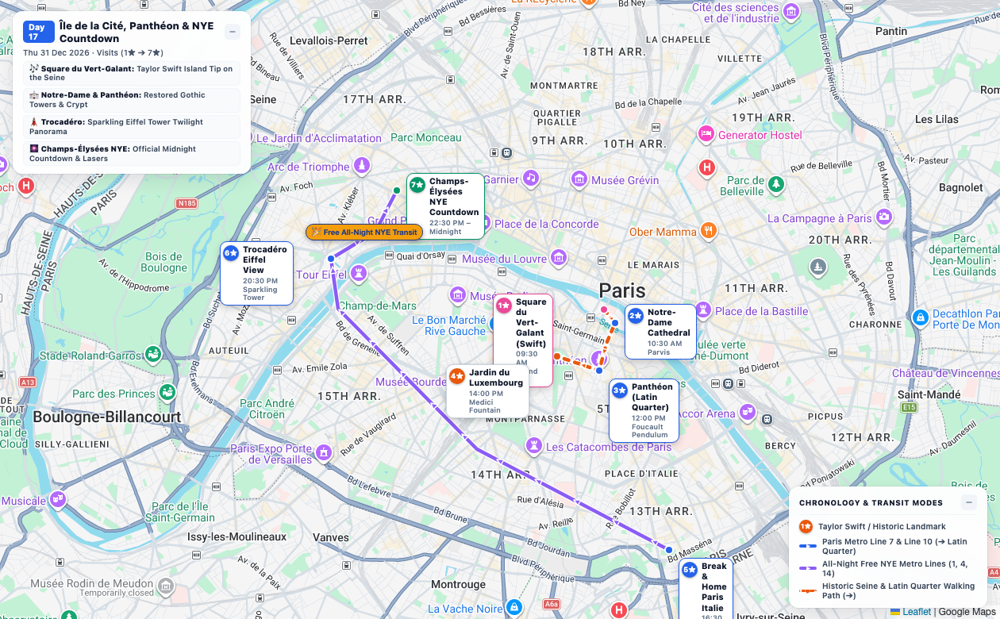
🗺️ Route Map (1★ ➔ 7★)
Tap to explore ➔
|
Île de la Cité, Latin Quarter Panthéon & Champs-Élysées NYE
• Île de la Cité & Square du Vert-Galant Seine cobblestone tip (Taylor Swift Begin Again).
• Notre-Dame Cathedral restored Gothic towers, facade portals, and parvis.
• Panthéon Neoclassical dome, Foucault's pendulum & crypt tombs in the Latin Quarter (12:00 PM; closes 17:00 NYE).
• Jardin du Luxembourg, Medici Fountain & Luxembourg Palace gardens.
• Esplanade du Trocadéro sparkling evening views of the Eiffel Tower.
• Av. des Champs-Élysées official NYE countdown & 3D laser show on the Arc de Triomphe (free all-night Metro).
💡 Day Tip: Arrive at Champs-Élysées by 22:30. Metro Line 1, 4, 14 run 24 hours free of charge on NYE night.
🎆 Arc de Triomphe NYE Fireworks Guide (Sweet Spot No. 100–110 & Free Metro) ▾
📍
The "Goldilocks" Sweet Spot: No. 100–110 Avenue des Champs-Élysées
Position yourself mid-avenue between Avenue George V and Rue Pierre Charron / Rue de Berri (approx. 350 to 450 meters from the monument).
👁️ Perfect Eye-Level Framing:
Avoids the painful 75° neck crane of standing right under the 50m Arc. Fits the entire facade and high-altitude fireworks in your photo frame.
🎬 Direct 3D Video Mapping:
The official musical projection show (starts 23:40) faces directly down the Champs-Élysées onto this eastern facade.
💨 Fast Midnight Escape Route:
When the show finishes, slip immediately down side streets (Rue Pierre Charron) without being trapped in the 500,000-person bottleneck at the roundabout.
🚫 Avoid Place de l'Étoile Roundabout: Fenced off by police barricades; heavy crowd crush and blocked visibility of fireworks bursts.
🚫 Avoid Rear/Side Avenues: You will completely miss the famous 3D projection show and countdown.
|
🎟️ Sightseeing: Panthéon: €13.00 · Notre-Dame, Trocadéro, NYE Countdown: Free
🚆 Transit: Free ($0 AUD · All-Night NYE Metro)
🏨 Lodging: €83.06 / night (Night 3 of 5)
Paid Sightseeing: ~A$22 AUD (€13)
|
|
Day 18
01 Jan 2027 (Fri)
France
|
📍 Paris (New Year's Day)
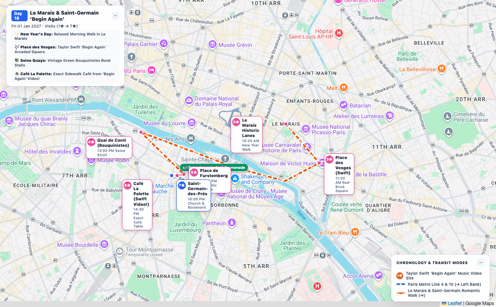
🗺️ Route Map (1★ ➔ 7★)
Tap to explore ➔
|
Le Marais Historic Mansions, Place des Vosges & Saint-Germain
• Le Marais historic aristocratic mansions, bakeries & cobblestone art lanes.
• Place des Vosges 17th-century symmetrical red-brick arcaded pavilions (Taylor Swift Begin Again).
• Seine riverbank quays (Quai Voltaire & Quai de Conti) past vintage green bouquinistes.
• Saint-Germain-des-Prés & charming Place de Furstemberg square.
• Café La Palette on Rue de Seine terrace (exact café where Taylor Swift sits in Begin Again).
💡 Day Tip: Most shops are closed on New Year's Day, but Le Marais and Saint-Germain bakeries and cafes remain open and lively.
|
🎟️ Sightseeing: Marais, Place des Vosges, Saint-Germain: Free ($0 AUD)
🚆 Transit: €4.30 (Metro tickets)
🏨 Lodging: €83.06 / night (Night 4 of 5)
Free Sightseeing ($0 AUD)
|
|
Day 19
02 Jan 2027 (Sat)
France
|
📍 Paris (Louvre, Champs-Élysées & Arc)
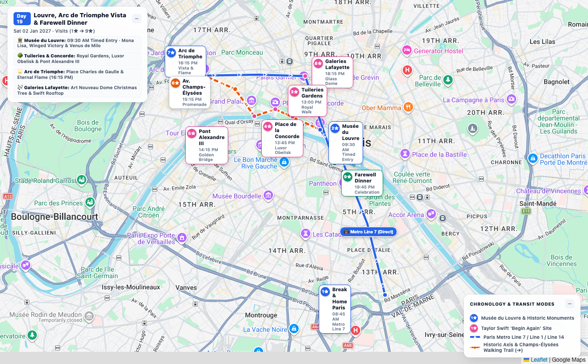
🗺️ Route Map (1★ ➔ 9★)
Tap to explore ➔
|
Musée du Louvre Masterpieces, Historic Axis, Arc de Triomphe Vista & Farewell Dinner
• Paris Metro Line 7 direct from Porte d'Italie to Palais Royal - Musée du Louvre (20 min).
• Musée du Louvre via Cour Napoléon pyramid (09:30 AM timed entry; Mona Lisa, Winged Victory & Venus de Milo).
• Linear Historic Axis walk through Jardin des Tuileries & Place de la Concorde Luxor Obelisk (Taylor Swift Begin Again).
• Grand Palais glass dome & Pont Alexandre III gilded bridge, continuing up Av. des Champs-Élysées.
• Arc de Triomphe at Place Charles de Gaulle (16:15 PM); viewing the monumental arch, Tomb of the Unknown Soldier & eternal flame.
• Galeries Lafayette Haussmann stained-glass holiday tree & rooftop terrace (Taylor Swift Begin Again finale).
• Celebratory Parisian farewell dinner in central Paris.
💡 Day Tip: Book Louvre 09:30 AM first-wave Saturday entry (€32 non-EEA rate) online in advance. Viewing the Arc de Triomphe from the pedestrian underpass/roundabout avoids the 284 spiral stairs and €16 rooftop ticket while keeping your sunset timeline intact.
|
🎟️ Sightseeing: Musée du Louvre: €32.00 · Arc de Triomphe: Exterior (Free) · Galeries Lafayette: Free
🚆 Transit: €7.50 (3 × Metro rides)
🏨 Lodging: €83.06 / night (Night 5 of 5)
Paid Sightseeing: ~A$54 AUD (€32)
|
|
Day 20
03 Jan 2027 (Sun)
Transit
|
📍 Paris ➔ London
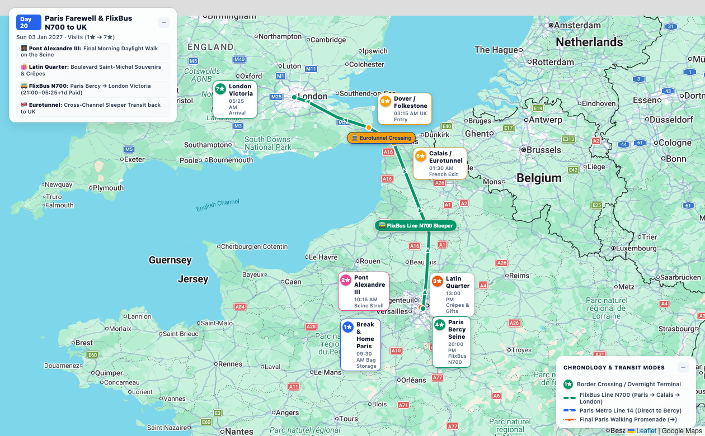
🗺️ Route Map (1★ ➔ 7★)
Tap to explore ➔
|
Final Seine River Promenade & Overnight FlixBus N700 to UK
• Break & Home Paris Italie check-out by 09:30 AM (official check-out 11:00 AM); store bags at front desk first.
• Morning Seine walk across Pont Alexandre III & Esplanade des Invalides (10:15 AM).
• Afternoon in Latin Quarter along Boulevard Saint-Michel & Shakespeare and Company for crêpes and souvenirs.
• Collect stored bags (19:15 PM) & ride Metro Line 14 to Paris Bercy Seine Coach Terminal (arrive 20:00 PM).
• FlixBus Route N700 sleeper departing at 21:00 (9:00 PM) via Eurotunnel to London Victoria.
💡 Day Tip: Arrive at Bercy terminal by 20:15 (45 min prior). Have passports ready for French exit control and UK Border Force entry at Calais/Eurotunnel.
|
🎟️ Sightseeing: Free ($0 AUD)
🚆 Transit: €2.15 (Metro 14) + AUD $169.98 (FlixBus Paid)
🏨 Lodging: Included on Sleeper Coach
Free Sightseeing ($0 AUD)
|
|
Day 21
04 Jan 2027 (Mon)
United Kingdom
|
📍 London ➔ Southampton
|
Arrival at London Victoria & Return to Southampton Residence
• FlixBus Route N700 arrives at London Victoria Coach Station at 05:25 AM.
• English breakfast & coffee at Victoria Station; London Underground to London Waterloo Station.
• South Western Railway mainline train (10:00 AM) direct to Southampton Central (11:15 AM).
• Arrive safely at Southampton residence; tour complete!
💡 Day Tip: Contactless payment accepted on London Underground. South Western Railway off-peak tickets are flexible.
|
🎟️ Sightseeing: Free ($0 AUD)
🚆 Transit: £2.80 (Tube) + £16.00 – £22.00 (SWR Train)
🏨 Lodging: Free (Family Home)
Tour Complete!
|
Official Boarding Passes booked for Jean Aristide Belleza Aquino & Avery Sinclair Belleza (Total Paid: AUD $462.86)
Official High-Speed Rail Tickets Confirmed for Amsterdam ➔ Cologne, Cologne ➔ Frankfurt & Bern ➔ Paris
4 holy temples are situated directly along or conveniently accessible from your journey's destinations (Paris, Bern, The Hague, and Frankfurt). Explore transit connections, visiting proximity, and locate them on the interactive map.
Official Church Account Bookings for Jean Aristide Belleza Aquino across Netherlands, Germany, Switzerland & France
Official legal justification under EU Schengen regulations, 3-way Day/Night mathematical calculation audit, and exact verbatim Article citations for immediate presentation to border immigration authorities.
Under EU Schengen Law, duration of stay is legally calculated in Calendar Days (Visa Code Handbook Sec. 2.1.2), while lodging is audited by Hotel Vouchers (Schengen Borders Code Annex I). Below is the complete mathematical transparency across all 21 days with B&B Hotel Kehl as the confirmed cross-border base:
| Country / Zone | Primary Hubs & Accommodations | Calendar Days (Schengen 90/180) |
Hotel Bed Nights |
Overnight Coach Transit Nights |
Primary Tourism Purpose & Legal Justification |
|---|---|---|---|---|---|
|
🇫🇷 FRANCE
MAIN DESTINATION
|
Primary Hubs & Lodging
Break & Home Paris Italie (Paris)
+ Strasbourg & Colmar (2N B&B Hotel Kehl Alsace base) |
Calendar Days
8 Days(6 Paris + 2 Alsace) |
Hotel Bed Nights
7 Nights(5 Paris + 2 Alsace Base) |
Coach Transit
1 Night(PAR ➔ LON N700) |
Purpose & Legal Art. 5(1)(b)
Primary Holiday Purpose (Art. 5(1)(b)): New Year's Eve 2027 on Champs-Élysées, Paris France Temple, Palace of Versailles, Musée du Louvre, Sacré-Cœur, Eiffel Tower, and Strasbourg & Colmar Christmas markets. Longest single continuous hotel stay (5 consecutive nights in Paris + 2 Alsace tour nights).
|
|
🇩🇪 GERMANY
Regional Tour
|
Primary Hubs & Lodging
Airbnb: Room in Cologne (Brucknerstraße 3) & Premier Inn Frankfurt City Centre (Frankfurt)
(Note: B&B Hotel Kehl is counted above as the cross-border Alsace base) |
Calendar Days
4 Days(19–22 Dec) |
Hotel Bed Nights
4 Nights(2 Cologne + 2 Frankfurt) |
Coach Transit
0(04:35 Dawn N13) |
Purpose & Regional Excursions
Regional Excursions: Cologne Cathedral & Lindt Chocolate Museum, Düsseldorf Christmas markets, Frankfurt Römerberg Christmas Market & Frankfurt Germany LDS Temple. B&B Hotel Kehl (23–25 Dec) serves strictly as a border commuter lodging for daytime tourism in Strasbourg and Colmar via Tram Line D.
|
|
🇨🇭 SWITZERLAND
Alpine Tour
|
Primary Hubs & Lodging
Valley Hostel (Lauterbrunnen)
Zurich, Lucerne, Mürren, Schilthorn, Jungfraujoch, Grindelwald, Iseltwald, Sigriswil, Bern |
Calendar Days
5 Days(25–29 Dec) |
Hotel Bed Nights
4 Nights(Valley Hostel, Lauterbrunnen) |
Coach Transit
0(04:05 Dawn N846) |
Purpose & Alpine Tourism
Alpine Tourism & Worship: Bern Switzerland LDS Temple, Crash Landing on You filming sites (Iseltwald Pier, Panoramabrücke Sigriswil, Kleine Scheidegg & Zurich Lindenhof), Jungfraujoch, First Cliff Walk, Staubbach Falls, Mürren & Schilthorn. Departs to Paris on 29 Dec via TGV Lyria 9284.
|
|
🇳🇱 NETHERLANDS
Entry Hub
|
Primary Hubs & Lodging
Amsterdam Hostel Leidseplein
Canal Ring, Zaanse Schans, Museumplein, The Hague |
Calendar Days
3 Days(16–18 Dec) |
Hotel Bed Nights
3 Nights(Amsterdam) |
Coach Transit
1 Night(LON ➔ AMS N824) |
Purpose & Cultural Tourism
Cultural Tourism & Worship: Amsterdam Light Festival, Zaanse Schans Windmills, Rijksmuseum, Van Gogh Museum, Peace Palace, International Criminal Court (ICC) & The Hague Netherlands LDS Temple.
|
|
🚌 SLEEPER COACHES
Cross-Channel
|
Route Segments
2 Overnight Channel Crossings
LON➔AMS (N824) & PAR➔LON (N700) · Plus dawn coaches N13 & N846 |
Calendar Days
2 UK Transit(15 Dec & 04 Jan) |
Hotel Bed Nights
0(In Transit) |
Coach Transit
2 Nights
|
Transit Justification
Confirmed Cross-Channel Sleeper Transit: FlixBus N824 (15 Dec) enters Schengen via French PAF juxtaposed border control; FlixBus N700 (03 Jan) exits Schengen back to London Victoria, compliant with Borders Code Annex I(3)(b).
|
| 🇪🇺 TOTAL CONTINUOUS SCHENGEN & TRIP SUMMARY |
Days
19 Schengen(21 Total Days) |
Hotel Nights
18 Nights(100% Booked) |
Transit Nights
2 Nights(UK⇄Schengen) |
19 Schengen Calendar Days (16 Dec 2026 – 03 Jan 2027) · 18 Continuous Schengen Hotel Nights (5 Paris + 2 Alsace/Kehl + 4 Lauterbrunnen + 4 Cologne/Frankfurt + 3 Amsterdam) + 2 Cross-Channel Sleeper Coaches = 20 Total Trip Nights. | |
"The Member State competent for examining and deciding on an application for a uniform visa shall be: ... (b) if the visit includes more than one destination, or if several separate visits are to be carried out within a period of two months, the Member State whose territory constitutes the main destination of the visit(s) in terms of the length or purpose of stay; or (c) if no main destination can be determined, the Member State whose external border the applicant intends to cross in order to enter the territory of the Member States."
"The Member State whose territory constitutes the main destination is determined by the length of stay (counted in days) or the purpose of stay. ... In order to determine the main destination, the consulate/border authority must take into account all the facts of the particular case, namely the duration and purpose of stay in each Member State."
"3. For journeys undertaken for private reasons or tourism: (a) supporting documents as regards lodging: an invitation from the host if staying with one, a supporting document from the establishment providing lodging or any other appropriate document indicating the accommodation envisaged; (b) supporting documents as regards the itinerary: confirmation of the booking of an organized trip or any other appropriate document indicating the envisaged travel plans; (c) supporting documents as regards return..."
"The fact that a third-country national holds a visa issued by one Schengen State and presents themselves at the border of another Schengen State does not, of itself, constitute a ground for refusal of entry. ... The border guard must verify whether the holder still fulfills the entry conditions and whether the visa was obtained in accordance with the rules (i.e. that the issuing State remains the main destination or that the travel plan is genuine)."
| Country | Key Cities | Nights |
|---|---|---|
| 🇫🇷 FRANCE (Main) | Paris, Le Chesnay, Versailles, Strasbourg, Colmar | 7 Nights (5 Paris + 2 Alsace Base) |
| 🇨🇭 Switzerland | Lauterbrunnen, Mürren, Jungfraujoch, Iseltwald, Bern | 4 Nights |
| 🇩🇪 Germany | Cologne (2N), Düsseldorf, Frankfurt am Main (2N) | 4 Nights |
| 🇳🇱 Netherlands | Amsterdam, Zaanse Schans, The Hague | 3 Nights |
| 🚌 Cross-Channel Sleepers | London ➔ Amsterdam (N824) & Paris ➔ London (N700) | 2 Nights (UK⇄Schengen) |
| TOTAL SCHENGEN STAY | 16 Dec 2026 – 03 Jan 2027 (Single Continuous Entry) | 18 Stationary Nights (20 Trip Nights) |
| Flight & Route | Departure / Arrival | Status |
|---|---|---|
| CZ5052 (B738) MNL ➔ CAN |
12 Dec 2026 · 03:20 MNL T3 12 Dec 2026 · 05:50 CAN T2 |
Confirmed |
| CZ303 (B789) CAN ➔ LHR |
12 Dec 2026 · 13:40 CAN T2 12 Dec 2026 · 18:35 LHR T4 |
Confirmed |
| CZ690 (B789) LGW ➔ CAN |
08 Jan 2027 · 09:50 LGW South 09 Jan 2027 · 05:35 CAN T2 |
Confirmed |
| CZ5051 (B738) CAN ➔ MNL |
09 Jan 2027 · 09:40 CAN T2 09 Jan 2027 · 12:20 MNL T3 |
Confirmed |